In an earlier post we considered machine learning “models” as functions producting predictions from data, and training models to be the production of these functions with higher-order functions. From there we built regression trees–models created recursively by determining 1) a splitting column (column 1 or 2 in this case), and 2) a good value in that column to split the dataset on. At each split, we find a column and value that produces two relatively homogenous sets of y values (in the sense that the values in each y subset can be well-predicted from the column values).
The figure below illustrates splitting on column x3, where values of x3 below the threshold produce decent predictions for y as do those above the threshold (better than other potential columns and split points within them). This process repeats for each subset, until either too few rows are left or some other stopping condition is met, in which case the predictions are just simple linear models. When making predictions, we just need to split the query dataset using the same columns and thresholds.
Here we’ll continue the discussion from where we left off: an implementation of regression trees with bootstrap-aggregating, or “bagging,” which produces a number of independent random samples (with replacement) of the training data, trains a model on each, and uses the average model prediction as the overall prediction. This improves the performance of the model by making it more robust to noise in the training data; extreme outliers, for example, may throw off a single model, but amongst the random bootstrap models only some (those whose random samples happened to include the outliers) will be affected.
Although both bagging and tree-based models can be used for discrete class predictions (classification), we are working with continuous predictions (regression)1. As a reminder, here is the dataset we are training on predicting on, where continuous y values are based on x1 and x2 values in a complex way:
x1_values <- seq(-1, 2, length.out = 30)
x2_values <- seq(-0.5, 2.5, length.out = 30)
# data frame of predictor variables; all combinations of x1_values and x2_values
df_x <- expand.grid(x1 = x1_values, x2 = x2_values)
# the y response vector depends on both
y <- cos(0.8*df_x$x1 + 0.2*df_x$x2) ^ 3 + cos(df_x$x2) ^ 3
# we'll center the y vector to a mean of 0 for illustration
y <- y - mean(y)
# a data frame of x1, x2, and y
train_data <- data.frame(df_x, y)
ggplot(train_data) +
geom_tile(aes(x = x1, y = x2, fill = y, color = y)) +
geom_contour(aes(x = x1, y = x2, z = y), bins = 10) +
coord_equal() +
scale_fill_gradient2(low = "purple4", high = "orange3") +
scale_color_gradient2(low = "purple4", high = "orange3") 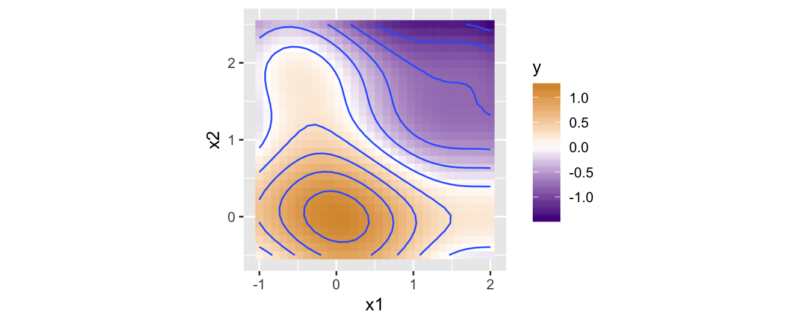
Bootstrap-aggregating is curious, in that each individual bootstrap model should, in theory, be less powerful than a model that considers all of the data. And yet, by combining predictions from a variety of these weaker models, we get better results overall. Such methods are known as “ensemble” methods.
Ensemble methods work best when the various models being aggregated are not highly correlated. Consider what would happen if each bootstrap model happened to get the same random sample: they would all produce identical predictions, negating the benefit. That’s not to say that we want the predictions made by the models to be more random, but rather that we want all of the predictions to be accurate, just generated in different ways by the various models. An ensemble of similar predictions generated by very different means is likely to be robust to new \(x\) data, whereas an ensemble of different predictions produced in very similar ways is, well, just noise.
Ensemble methods work well then, when each individual model produces good (or at least decent, and hopefully non-biased) predictions, but the models themselves are quite different. Bootstrap aggregating accomplishes this by subsetting random training data. Another potential way to do this might be to aggregate predictions from the various models, but choose the depths (how many times we allow a split) randomly.
But some methods of generating these sets of models are better than others. Consider the depth = 2 (where the data are split, and then each subset is split, but it ends there), num_boostraps = 30 panel in the lower-left below. Here the models are trained on a noisy version of the y data.
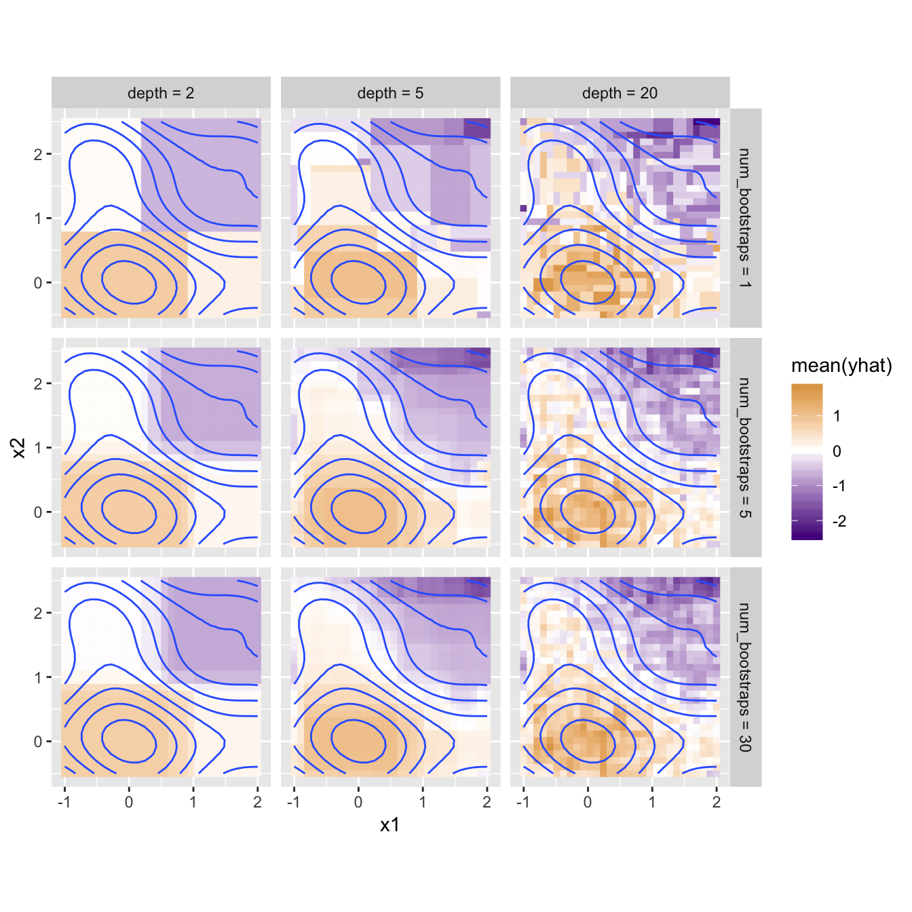
Even though each model is trained on random data, they almost universally choose to split at or near the same points, in the same order (split first on x1 near 1.5, then for the “left” model split again on x1 near -1.5 while the “right” splits on x2 near -0.5). The various models are highly correlated, because in this data x1 is the obvious best choice for the first split, even on a random subset of data.
A popular modification of the bootstrap technique generates what are known as Random Forests. Here, in addition to generating random subsets of data, each regression tree only considers a random subset of columns when determining the best column to split on.
Consider what would happen if some of the models were disallowed x1 as the first splitting column. They would be forced to find the best split point on the remaining column x2, but then of course for later splits could use x1 (or not, depending on what restrictions we place on future splits). These models may be weaker than a model without such restrictions, but the predictions made would still be pretty good. Importantly, the various models would use very different processes to arrive at their predictions, and collectively they would be robust to some columns hogging all of the attention.
The Random Forest algorithm implements this idea by modifying the split procedure. Whenever the best column for splitting is being determined, only a random subset of potential splitting columns is considered. This adds random restrictions at each split point, generating a large number of “random trees,” hence the name Random Forest.2 In our framework implementing a Random Forest is as easy as modifying the train_df function to consider a random subset of columns when determining the best column to split on. If there are \(n\) column indices to check, we’ll select \(\lfloor n/2 \rfloor\) at random.3
train_df <- function(df_x, y, depth = 0) {
error_func <- function(x) {
model <- train_optimal_split_lm(x, y)
return(sse(y, model(x)))
}
best_index <- Inf
best_error <- Inf
#for(index in 1:ncol(df_x)) { # instead of checking all column indices
num_indices <- as.integer(ncol(df_x) / 2) # n/2, rounded down
random_indices <- sample(1:ncol(df_x), size = num_indices) # which column indices can we consider?
for(index in random_indices) { # only check those indices
x_i <- df_x[ , index]
error <- error_func(x_i)
if(error < best_error) {
best_index <- index
best_error <- error
}
}
return(train_df_index(df_x, y, best_index, depth))
}Let’s re-run the depth-vs-num_bootstraps analysis from above with this new change.
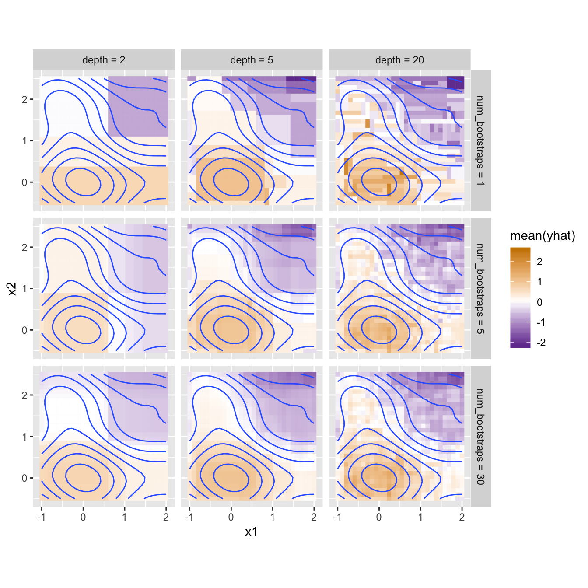
The difference isn’t dramatic, but note the additional gradations present in the lower-left panel: rather than four very homogenous quadrants, each contains some additional nuances that better reflect the trends in the training data. Random Forests can be particularly helpful when the number of training columns is large, since in many real datasets a few “important” columns can dominate the tree-making process, leaving columns of lesser importance (but still useful!) out in the cold.
Our last method will also be based on the train_df function. While random-column selection is compatible, it’s not usually incorporated, we’ll revert to the earlier version. We’ll also be training on our non-noised y data, to better visualize what’s going on.
To introduce gradient boosting, we’ll start with a relatively weak model that only goes 3 splits deep (depth = 3). Here’s one predicting our y data.
# generate predictions without allowing slope
USE_SLOPE <- FALSE
base_model <- train_df(df_x, y, depth = 3)
yhat <- base_model(df_x)
# data frame with columns for x1, x2, y, and yhat
all_data <- data.frame(df_x, y, yhat)
ggplot(all_data) +
geom_tile(aes(x = x1, y = x2, fill = yhat, color = yhat)) +
geom_contour(aes(x = x1, y = x2, z = y), bins = 10) +
coord_equal() +
scale_fill_gradient2(low = "purple4", high = "orange3") +
scale_color_gradient2(low = "purple4", high = "orange3")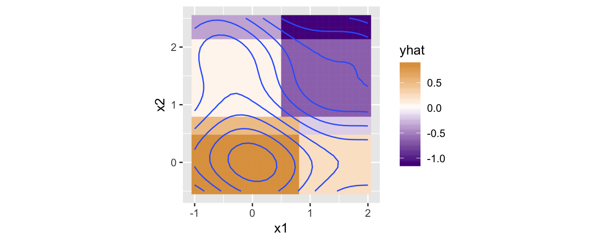
Similarly, we can plot and compute the differences between yhat and y (the residuals, which I like to think of as “prediction errors,” but shouldn’t be confused with sum-absolute-error or sum-squared-error used for model training).
residuals <- y - yhat
print(head(residuals))## [1] -0.7224069 -0.6422521 -0.5537846 -0.4600621 -0.3646723 -0.2715274# data frame with columns for x1, x2, y, and residuals
all_data <- data.frame(df_x, y, residuals)
ggplot(all_data) +
geom_tile(aes(x = x1, y = x2, fill = residuals, color = residuals)) +
geom_contour(aes(x = x1, y = x2, z = y), bins = 10) +
coord_equal() +
scale_fill_gradient2(low = "purple4", high = "orange3") +
scale_color_gradient2(low = "purple4", high = "orange3")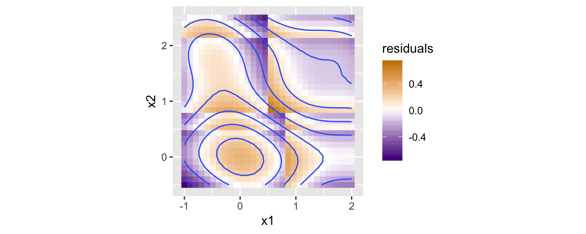
Now, what would happen if we were to try to produce a model that predicts not y, but rather the residuals? If we could predict the residuals perfectly, all we need to do is add them to the not-so-great yhat values to get back the real y values. We’re going generate a model that predicts how to correct the first model! But we’re going to do this with another rather weak regression tree of depth 3.4 Here’s what the predicted residuals look like from this training:
corrector <- train_df(df_x, residuals, depth = 3)
residuals_hat <- corrector(df_x)
# data frame with columns for x1, x2, y, residuals_hat
all_data <- data.frame(df_x, y, residuals_hat)
ggplot(all_data) +
geom_tile(aes(x = x1, y = x2, fill = residuals_hat, color = residuals_hat)) +
geom_contour(aes(x = x1, y = x2, z = y), bins = 10) +
coord_equal() +
scale_fill_gradient2(low = "purple4", high = "orange3") +
scale_color_gradient2(low = "purple4", high = "orange3")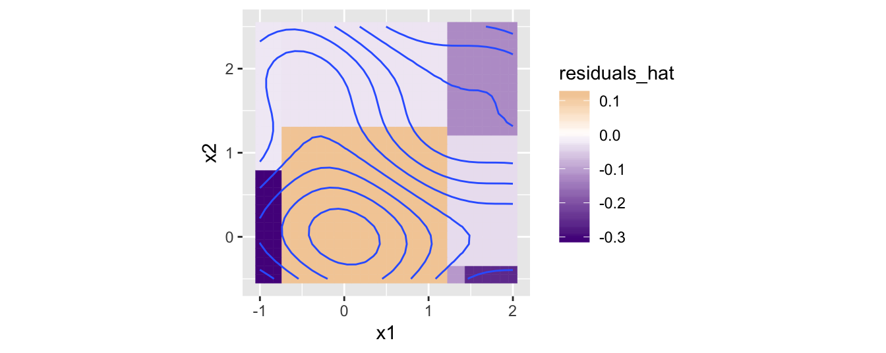
Since the above are the predictions for the residuals, if we want to make updated predictions for the original y data we need to add these to yhat to produce new yhat predictions.
yhat <- yhat + residuals_hat
# data frame with columns for x1, x2, y, and new yhat
all_data <- data.frame(df_x, y, yhat)
ggplot(all_data) +
geom_tile(aes(x = x1, y = x2, fill = yhat, color = yhat)) +
geom_contour(aes(x = x1, y = x2, z = y), bins = 10) +
coord_equal() +
scale_fill_gradient2(low = "purple4", high = "orange3") +
scale_color_gradient2(low = "purple4", high = "orange3")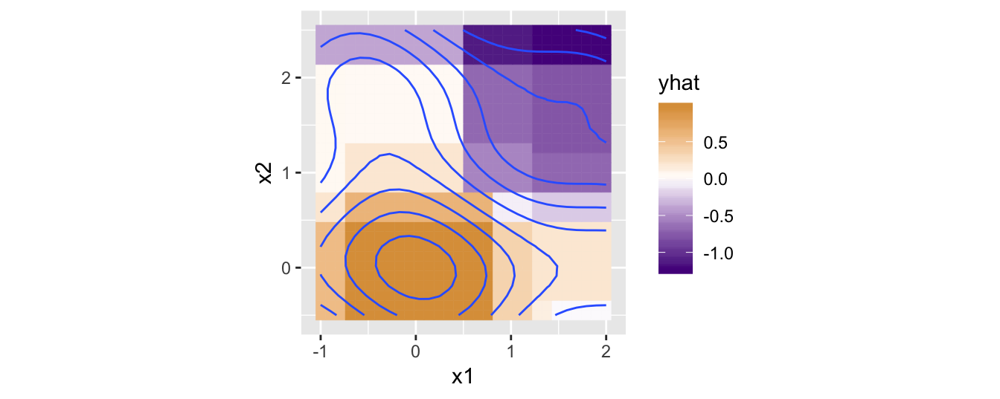
In the next iteration we repeat: we compute a new residuals from the current yhat and y, train another corrector model on those, and our new yhat will be the sum:
residuals <- y - yhat
corrector <- train_df(df_x, residuals, depth = 3)
residuals_hat <- corrector(df_x)
yhat <- yhat + residuals_hat
# data frame with columns for x1, x2, y, residuals_hat
all_data <- data.frame(df_x, y, residuals_hat)
ggplot(all_data) +
geom_tile(aes(x = x1, y = x2, fill = yhat, color = yhat)) +
geom_contour(aes(x = x1, y = x2, z = y), bins = 10) +
coord_equal() +
scale_fill_gradient2(low = "purple4", high = "orange3") +
scale_color_gradient2(low = "purple4", high = "orange3")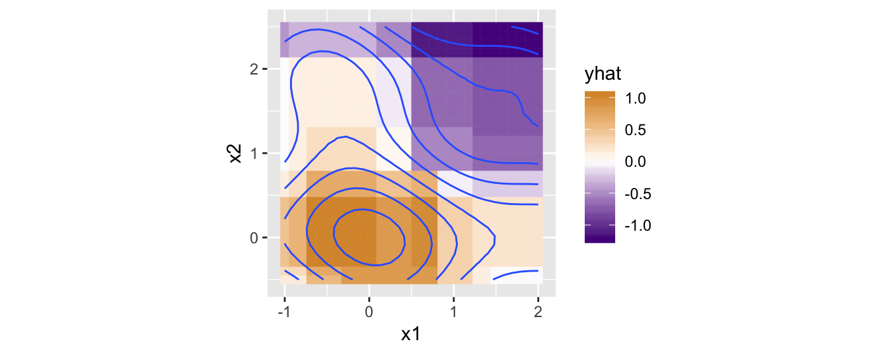
This process, repeated, is the essense of gradient boosting: during training, each model is trained on the error of the last. When making new predictions, we simply need to add up all the predictions of the various models.
Although we could use a loop for this, a recursive definition works well too. The stack_size parameter controls how many models are built (since we are “stacking” their predictions); if stack_size = 0 a very simple base model used,5 otherwise, a model with stack_size - 1 is used for the initial yhat predictions (which will contain stack_size - 1 models), and to this we add predictions for residuals.
train_df_boosted <- function(df_x, y, stack_size = 0) {
# stack_size = 0 is just the mean of the y values
if(stack_size == 0) {
predictor <- train_df(df_x, y, depth = 0)
return(predictor)
}
# train a model to estimate y
submodel <- train_df_boosted(df_x, y, stack_size - 1)
# compute residuals
yhat <- submodel(df_x)
residuals <- y - yhat
# build a model that predicts the residuals
corrector <- train_df(df_x, residuals, depth = 3)
# overall prediction: submodel predictions + corrector predictions
predictor <- function(new_df_x) {
submodel_predictions <- submodel(new_df_x)
corrector_predictions <- corrector(new_df_x)
return(submodel_predictions + corrector_predictions)
}
return(predictor)
}Let’s see how this scheme performs with different depth values.
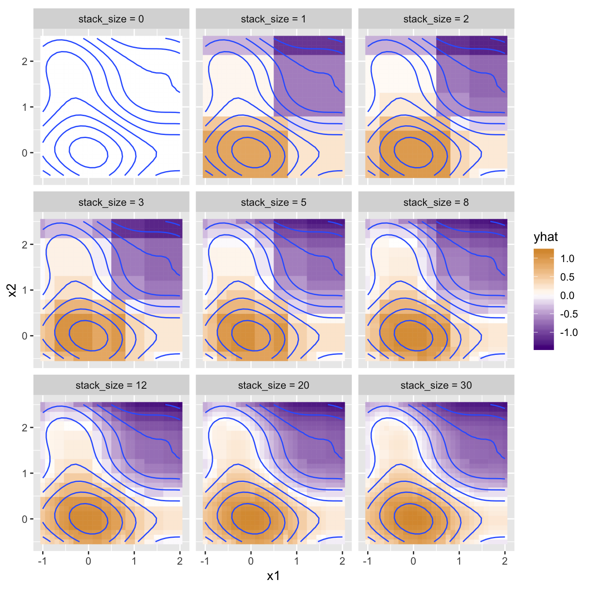
Notice how quickly the model coverges with even small stacks of models! This is actually a deficit of gradient boosting: it’s so powerful that it can be quick to learn both the trends in the data and the noise. Here’s the same plot, but trained on the ynoised data.
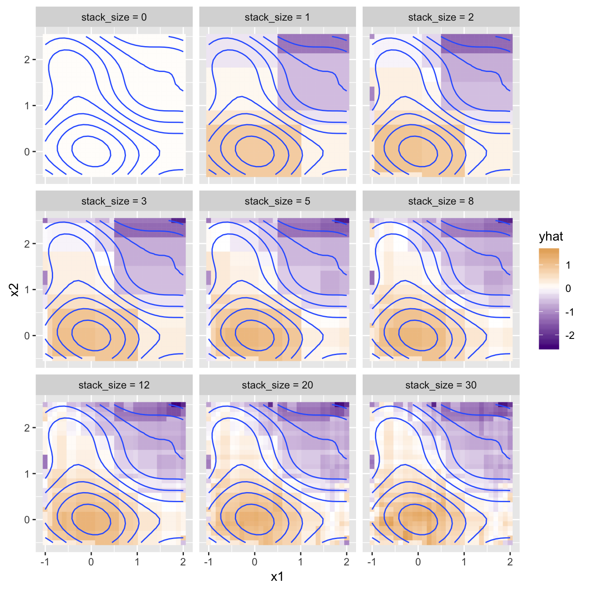
To mitigate this, another parameter is added, \(\eta\) (eta). Rather than adding the full estimated corrections supplied by each corrector model, we tone these down by multiplying them by this small constant, usually in the range 0.1 to 0.3.
train_df_boosted <- function(df_x, y, stack_size = 0, eta = 0.1) {
# depth = 0 is just a single decision stump
if(stack_size == 0) {
#predictor <- train_df(df_x, y, depth = 4)
predictor <- function(new_df_x) {
return(rep(mean(y), nrow(new_df_x)))
}
return(predictor)
}
# train a model to estimate y
submodel <- train_df_boosted(df_x, y, stack_size - 1, eta) # pass it down
# compute residuals
yhat <- submodel(df_x)
residuals <- y - yhat
# build a model that predicts the residuals
corrector <- train_df(df_x, residuals, depth = 3)
# overall prediction: submodel predictions + corrector predictions
predictor <- function(new_df_x) {
submodel_predictions <- submodel(new_df_x)
corrector_predictions <- corrector(new_df_x)
return(submodel_predictions + eta * corrector_predictions) # multiply by eta
}
return(predictor)
}This adjustment requires significantly more models for the same performance, so the noise-robustness comes at a computational cost.
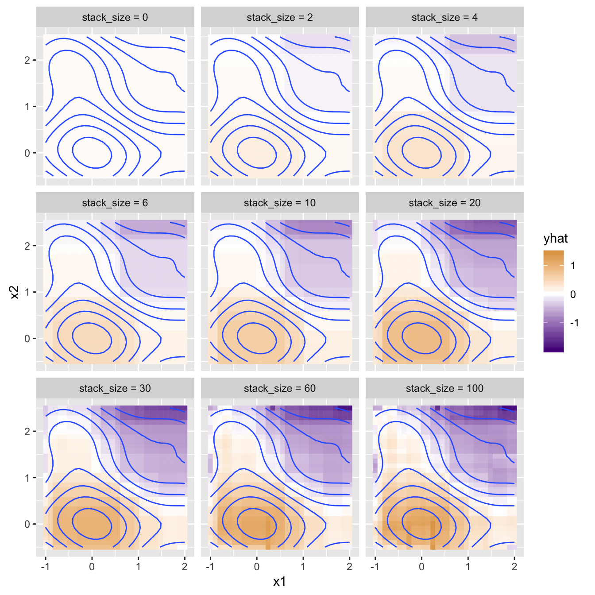
Gradient-boosting is a rather elegant method for building complex models from simpler ones, and it lends itself nicely to a functional, recursively-defined implementation. Gradient boosting, by the way, is so-called because the “gradient” is the direction of most change (toward improving a cost function, like sum-squared-error), and each model attempts to predict the error of the stack thus far, directly attempting to improve the model by reducing error in an efficient way. It isn’t just intuitive, it has a strong theoretical basis as a gradient-descent process. While some argue there’s a particular beauty in that the gradient is descended in “function space” rather than “parameter space,” I’m not sure I see that, given the correspondence between predictive models and functions we’ve explored.
I did attempt to put together a more compact regression-tree model with some improvements, though it’s not the prettiest.
First, I realized that training could handle discrete columns easily if these are converted to ordered factors, with the ordering determined by the variance of y across categories. This lets us work with factors much like numbers, and puts the smallest-variance category “first”, allowing a split to separate out the category with least variance (or, if it may be better, to split into groups of smaller-variance categories and larger-variance categories).
order_categoricals_by_variance <- function(df, y) {
for(i in 1:ncol(df)) {
col_i <- df[, i]
if(!is.numeric(col_i)) {
# order the levels in col_i by data in y, using var() as the function to order by
df[, i] <- reorder(col_i, y, var, order = TRUE)
}
}
return(df)
}We also need a way to copy this order to a new_df_x when it comes time to make predictions.
order_categoricals_copy <- function(df, copy_from_df) {
for(i in 1:ncol(df)) {
col_i <- df[, i]
from_i <- copy_from_df[, i]
if(!is.numeric(col_i)) {
# use the same levels and ordering as in from_i
df[, i] <- factor(col_i, levels = levels(from_i), ordered = TRUE)
}
}
return(df)
}A simpler base-predictor always uses the mean of the y data; note that here the predictor returns new_df_x with a new yhat column; this allows us to make predictions on splitted subsets of data rather than the entire query dataset as the previous code did.
train_base <- function(df_x, y) {
mean_y <- mean(y)
predictor <- function(new_df_x) {
new_df_x$yhat <- rep(mean_y, nrow(new_df_x))
return(new_df_x)
}
return(predictor)
}A split_df function does the job of splitting a dataframe into two pieces, by finding the best splitting column and best split-point (considering all possibilities). It returns a list with those two pieces, correspinding y values, and the column index and value it found the split on. Additionally, the last element of the returned list contains labels for the splitting criteria, e.g. c("x2 <= 1.88", "x2 > 1.88") or c("x4 is Yes or Maybe", "x4 is No or Never") in the case of categorical variables.
split_df <- function(df_x, y) {
best_sse <- Inf
best_i <- NA
best_threshold <- NA
for(i in 1:ncol(df_x)) {
x_i <- df_x[, i]
for(threshold in unique(x_i)) {
residuals_lte <- y[x_i <= threshold] - mean(y[x_i <= threshold])
residuals_gt <- y[x_i > threshold] - mean(y[x_i > threshold])
sse <- sum(residuals_lte ^ 2) + sum(residuals_gt ^ 2)
# sse could be NA if y[x_i > threshold] has no data; we won't consider these non-split-splits
if(!is.na(sse) & sse < best_sse) {
best_sse <- sse
best_i <- i
best_threshold <- threshold
}
}
}
best_x_i <- df_x[, best_i]
df_x_lte <- df_x[best_x_i <= best_threshold, ]
y_lte <- y[best_x_i <= best_threshold]
df_x_gt <- df_x[best_x_i > best_threshold, ]
y_gt <- y[best_x_i > best_threshold]
split_labels <- create_split_labels(df_x, best_i, best_threshold)
parts <- list(df_x_lte, df_x_gt, y_lte, y_gt, best_i, best_threshold, split_labels)
return(parts)
}Creating the split labels is messy work, particularly for categorical splits.
create_split_labels <- function(df_x, best_i, best_threshold) {
if(is.numeric(best_threshold)) {
best_threshold <- signif(best_threshold, 3)
split_labels <- c(paste0(colnames(df_x)[best_i], " <= ", best_threshold),
paste0(colnames(df_x)[best_i], " > ", best_threshold))
} else {
best_x_i <- df_x[, best_i]
present_levels <- levels(best_x_i)[levels(best_x_i) %in% unique(best_x_i)]
lte_levels <- paste(present_levels[present_levels <= best_threshold], collapse = " or ")
gt_levels <- paste(present_levels[present_levels > best_threshold], collapse = " or ")
split_labels <- c(paste0(colnames(df_x)[best_i], " is ", lte_levels),
paste0(colnames(df_x)[best_i], " is ", gt_levels))
}
return(split_labels)
}Lastly, the train_tree function; note that at each level we can re-order the factor levels so that levels are ordered by variance per subset of the data; when making predictions, the same ordering is used.
train_tree <- function(df_x, y, depth = 0) {
if(depth == 0 | nrow(df_x) <= 6) {
return(train_base(df_x, y))
}
# recompute level ordering for this subset of data
df_x <- order_categoricals_by_variance(df_x, y)
split_parts <- split_df(df_x, y)
left_df_x <- split_parts[[1]]
right_df_x <- split_parts[[2]]
left_y <- split_parts[[3]]
right_y <- split_parts[[4]]
best_i <- split_parts[[5]]
best_threshold <- split_parts[[6]]
split_labels <- split_parts[[7]]
left_model <- train_tree(left_df_x, left_y, depth - 1)
right_model <- train_tree(right_df_x, right_y, depth - 1)
predictor <- function(new_df_x) {
# use the same level ordering as was computed for training
new_df_x <- order_categoricals_copy(new_df_x, df_x)
new_x_i <- new_df_x[, best_i]
left_new_df_x <- new_df_x[new_x_i <= best_threshold, ]
right_new_df_x <- new_df_x[new_x_i > best_threshold, ]
# answer is a list of 2 model answers
answer <- list(left_model(left_new_df_x), right_model(right_new_df_x))
names(answer) <- split_labels
return(answer)
}
return(predictor)
}An interesting feature of the above is that it always returns a list as an answer, containing the two answers from the sub-models, and we name the list elements with the splitting labels. This creates a nested data structure containing the predictions as well as a hierarchical clustering of the input data based on the model structure. Here’s a small test dataset that includes two categorical variables, grade and check.
x1_values <- seq(-1, 2, length.out = 30)
x2_values <- seq(-0.5, 2.5, length.out = 30)
grade_values <-c("A", "B", "C", "D")
check_values <-c("YES", "NO", "MAYBE")
# data frame of predictor variables; all combinations of x1_values and x2_values
df_x <- expand.grid(x1 = x1_values, x2 = x2_values, grade = grade_values, check = check_values)
grade_adj <- as.integer(as.factor(df_x$grade)) - mean(as.integer(as.factor(df_x$grade))) # adjustment for grade
# the y response vector depends on both
y <- cos(0.8*df_x$x1 + 0.2*df_x$x2) ^ 3 + cos(df_x$x2 + grade_adj/3) ^ 3
# adjustment for check column
y[df_x$check == "MAYBE"] <- -0.75 * y[df_x$check == "MAYBE"]
y[df_x$check == "YES"] <- -1.5 * y[df_x$check == "YES"]
# we'll center the y vector to a mean of 0 for illustration
y <- y - mean(y)
# a data frame of x1, x2, and y
train_data <- data.frame(df_x, y)
ggplot(train_data) +
geom_tile(aes(x = x1, y = x2, fill = y, color = y)) +
geom_contour(aes(x = x1, y = x2, z = y), bins = 10) +
coord_equal() +
scale_fill_gradient2(low = "purple4", high = "orange3") +
scale_color_gradient2(low = "purple4", high = "orange3") +
facet_grid(check ~ grade)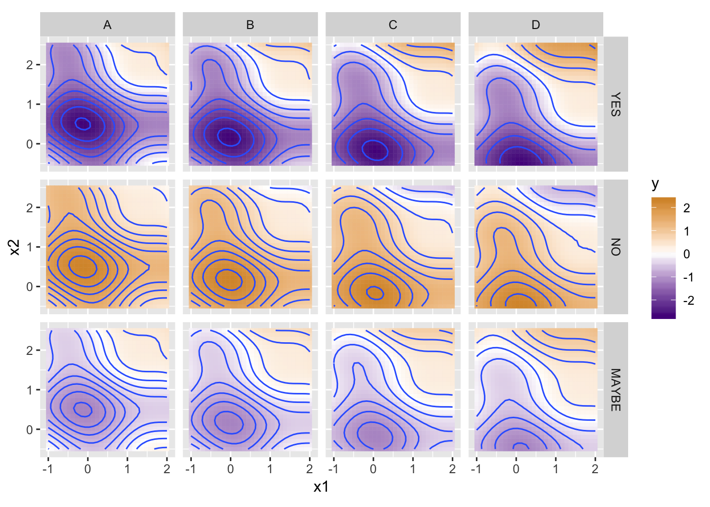
print(head(train_data))## x1 x2 grade check y
## 1 -1.0000000 -0.5 A YES -0.2883904
## 2 -0.8965517 -0.5 A YES -0.4086226
## 3 -0.7931034 -0.5 A YES -0.5413238
## 4 -0.6896552 -0.5 A YES -0.6819075
## 5 -0.5862069 -0.5 A YES -0.8249922
## 6 -0.4827586 -0.5 A YES -0.9647095And here’s what the prediction structure looks like for a depth-3 model:
model <- train_tree(df_x, y, depth = 4);
result <- model(df_x)
str(result, give.attr = FALSE)## List of 2
## $ check is MAYBE or NO:List of 2
## ..$ check is MAYBE:List of 2
## .. ..$ x2 <= 0.948:List of 2
## .. .. ..$ x1 <= 0.759:'data.frame': 1080 obs. of 5 variables:
## .. .. .. ..$ x1 : num [1:1080] -1 -0.897 -0.793 -0.69 -0.586 ...
## .. .. .. ..$ x2 : num [1:1080] -0.5 -0.5 -0.5 -0.5 -0.5 -0.5 -0.5 -0.5 -0.5 -0.5 ...
## .. .. .. ..$ grade: Ord.factor w/ 4 levels "B"<"A"<"C"<"D": 2 2 2 2 2 2 2 2 2 2 ...
## .. .. .. ..$ check: Ord.factor w/ 3 levels "MAYBE"<"NO"<"YES": 1 1 1 1 1 1 1 1 1 1 ...
## .. .. .. ..$ yhat : num [1:1080] -0.747 -0.747 -0.747 -0.747 -0.747 ...
## .. .. ..$ x1 > 0.759 :'data.frame': 720 obs. of 5 variables:
## .. .. .. ..$ x1 : num [1:720] 0.862 0.966 1.069 1.172 1.276 ...
## .. .. .. ..$ x2 : num [1:720] -0.5 -0.5 -0.5 -0.5 -0.5 -0.5 -0.5 -0.5 -0.5 -0.5 ...
## .. .. .. ..$ grade: Ord.factor w/ 4 levels "B"<"A"<"C"<"D": 2 2 2 2 2 2 2 2 2 2 ...
## .. .. .. ..$ check: Ord.factor w/ 3 levels "MAYBE"<"NO"<"YES": 1 1 1 1 1 1 1 1 1 1 ...
## .. .. .. ..$ yhat : num [1:720] -0.264 -0.264 -0.264 -0.264 -0.264 ...
## .. ..$ x2 > 0.948 :List of 2
## .. .. ..$ x1 <= 0.345:'data.frame': 840 obs. of 5 variables:
## .. .. .. ..$ x1 : num [1:840] -1 -0.897 -0.793 -0.69 -0.586 ...
## .. .. .. ..$ x2 : num [1:840] 1.05 1.05 1.05 1.05 1.05 ...
## .. .. .. ..$ grade: Ord.factor w/ 4 levels "B"<"A"<"C"<"D": 2 2 2 2 2 2 2 2 2 2 ...
## .. .. .. ..$ check: Ord.factor w/ 3 levels "MAYBE"<"NO"<"YES": 1 1 1 1 1 1 1 1 1 1 ...
## .. .. .. ..$ yhat : num [1:840] -0.237 -0.237 -0.237 -0.237 -0.237 ...
## .. .. ..$ x1 > 0.345 :'data.frame': 960 obs. of 5 variables:
## .. .. .. ..$ x1 : num [1:960] 0.448 0.552 0.655 0.759 0.862 ...
## .. .. .. ..$ x2 : num [1:960] 1.05 1.05 1.05 1.05 1.05 ...
## .. .. .. ..$ grade: Ord.factor w/ 4 levels "B"<"A"<"C"<"D": 2 2 2 2 2 2 2 2 2 2 ...
## .. .. .. ..$ check: Ord.factor w/ 3 levels "MAYBE"<"NO"<"YES": 1 1 1 1 1 1 1 1 1 1 ...
## .. .. .. ..$ yhat : num [1:960] 0.321 0.321 0.321 0.321 0.321 ...
## ..$ check is NO :List of 2
## .. ..$ x2 <= 0.948:List of 2
## .. .. ..$ x1 <= 0.759:'data.frame': 1080 obs. of 5 variables:
## .. .. .. ..$ x1 : num [1:1080] -1 -0.897 -0.793 -0.69 -0.586 ...
## .. .. .. ..$ x2 : num [1:1080] -0.5 -0.5 -0.5 -0.5 -0.5 -0.5 -0.5 -0.5 -0.5 -0.5 ...
## .. .. .. ..$ grade: Ord.factor w/ 4 levels "B"<"A"<"C"<"D": 2 2 2 2 2 2 2 2 2 2 ...
## .. .. .. ..$ check: Ord.factor w/ 3 levels "NO"<"MAYBE"<"YES": 1 1 1 1 1 1 1 1 1 1 ...
## .. .. .. ..$ yhat : num [1:1080] 1.72 1.72 1.72 1.72 1.72 ...
## .. .. ..$ x1 > 0.759 :'data.frame': 720 obs. of 5 variables:
## .. .. .. ..$ x1 : num [1:720] 0.862 0.966 1.069 1.172 1.276 ...
## .. .. .. ..$ x2 : num [1:720] -0.5 -0.5 -0.5 -0.5 -0.5 -0.5 -0.5 -0.5 -0.5 -0.5 ...
## .. .. .. ..$ grade: Ord.factor w/ 4 levels "B"<"A"<"C"<"D": 2 2 2 2 2 2 2 2 2 2 ...
## .. .. .. ..$ check: Ord.factor w/ 3 levels "NO"<"MAYBE"<"YES": 1 1 1 1 1 1 1 1 1 1 ...
## .. .. .. ..$ yhat : num [1:720] 1.07 1.07 1.07 1.07 1.07 ...
## .. ..$ x2 > 0.948 :List of 2
## .. .. ..$ x1 <= 0.345:'data.frame': 840 obs. of 5 variables:
## .. .. .. ..$ x1 : num [1:840] -1 -0.897 -0.793 -0.69 -0.586 ...
## .. .. .. ..$ x2 : num [1:840] 1.05 1.05 1.05 1.05 1.05 ...
## .. .. .. ..$ grade: Ord.factor w/ 4 levels "B"<"A"<"C"<"D": 2 2 2 2 2 2 2 2 2 2 ...
## .. .. .. ..$ check: Ord.factor w/ 3 levels "NO"<"MAYBE"<"YES": 1 1 1 1 1 1 1 1 1 1 ...
## .. .. .. ..$ yhat : num [1:840] 1.04 1.04 1.04 1.04 1.04 ...
## .. .. ..$ x1 > 0.345 :'data.frame': 960 obs. of 5 variables:
## .. .. .. ..$ x1 : num [1:960] 0.448 0.552 0.655 0.759 0.862 ...
## .. .. .. ..$ x2 : num [1:960] 1.05 1.05 1.05 1.05 1.05 ...
## .. .. .. ..$ grade: Ord.factor w/ 4 levels "B"<"A"<"C"<"D": 2 2 2 2 2 2 2 2 2 2 ...
## .. .. .. ..$ check: Ord.factor w/ 3 levels "NO"<"MAYBE"<"YES": 1 1 1 1 1 1 1 1 1 1 ...
## .. .. .. ..$ yhat : num [1:960] 0.291 0.291 0.291 0.291 0.291 ...
## $ check is YES :List of 2
## ..$ x2 <= 0.948:List of 2
## .. ..$ x1 <= 0.759:List of 2
## .. .. ..$ x2 <= 0.534:'data.frame': 792 obs. of 5 variables:
## .. .. .. ..$ x1 : num [1:792] -1 -0.897 -0.793 -0.69 -0.586 ...
## .. .. .. ..$ x2 : num [1:792] -0.5 -0.5 -0.5 -0.5 -0.5 -0.5 -0.5 -0.5 -0.5 -0.5 ...
## .. .. .. ..$ grade: Ord.factor w/ 4 levels "B"<"A"<"C"<"D": 2 2 2 2 2 2 2 2 2 2 ...
## .. .. .. ..$ check: Ord.factor w/ 3 levels "YES"<"MAYBE"<..: 1 1 1 1 1 1 1 1 1 1 ...
## .. .. .. ..$ yhat : num [1:792] -1.93 -1.93 -1.93 -1.93 -1.93 ...
## .. .. ..$ x2 > 0.534 :'data.frame': 288 obs. of 5 variables:
## .. .. .. ..$ x1 : num [1:288] -1 -0.897 -0.793 -0.69 -0.586 ...
## .. .. .. ..$ x2 : num [1:288] 0.638 0.638 0.638 0.638 0.638 ...
## .. .. .. ..$ grade: Ord.factor w/ 4 levels "B"<"A"<"C"<"D": 2 2 2 2 2 2 2 2 2 2 ...
## .. .. .. ..$ check: Ord.factor w/ 3 levels "YES"<"MAYBE"<..: 1 1 1 1 1 1 1 1 1 1 ...
## .. .. .. ..$ yhat : num [1:288] -1.45 -1.45 -1.45 -1.45 -1.45 ...
## .. ..$ x1 > 0.759 :List of 2
## .. .. ..$ x2 <= 0.431:'data.frame': 480 obs. of 5 variables:
## .. .. .. ..$ x1 : num [1:480] 0.862 0.966 1.069 1.172 1.276 ...
## .. .. .. ..$ x2 : num [1:480] -0.5 -0.5 -0.5 -0.5 -0.5 -0.5 -0.5 -0.5 -0.5 -0.5 ...
## .. .. .. ..$ grade: Ord.factor w/ 4 levels "B"<"A"<"C"<"D": 2 2 2 2 2 2 2 2 2 2 ...
## .. .. .. ..$ check: Ord.factor w/ 3 levels "YES"<"MAYBE"<..: 1 1 1 1 1 1 1 1 1 1 ...
## .. .. .. ..$ yhat : num [1:480] -1.02 -1.02 -1.02 -1.02 -1.02 ...
## .. .. ..$ x2 > 0.431 :'data.frame': 240 obs. of 5 variables:
## .. .. .. ..$ x1 : num [1:240] 0.862 0.966 1.069 1.172 1.276 ...
## .. .. .. ..$ x2 : num [1:240] 0.534 0.534 0.534 0.534 0.534 ...
## .. .. .. ..$ grade: Ord.factor w/ 4 levels "B"<"A"<"C"<"D": 2 2 2 2 2 2 2 2 2 2 ...
## .. .. .. ..$ check: Ord.factor w/ 3 levels "YES"<"MAYBE"<..: 1 1 1 1 1 1 1 1 1 1 ...
## .. .. .. ..$ yhat : num [1:240] -0.469 -0.469 -0.469 -0.469 -0.469 ...
## ..$ x2 > 0.948 :List of 2
## .. ..$ x1 <= 0.345:List of 2
## .. .. ..$ x2 <= 1.88:'data.frame': 504 obs. of 5 variables:
## .. .. .. ..$ x1 : num [1:504] -1 -0.897 -0.793 -0.69 -0.586 ...
## .. .. .. ..$ x2 : num [1:504] 1.05 1.05 1.05 1.05 1.05 ...
## .. .. .. ..$ grade: Ord.factor w/ 4 levels "B"<"A"<"C"<"D": 2 2 2 2 2 2 2 2 2 2 ...
## .. .. .. ..$ check: Ord.factor w/ 3 levels "YES"<"MAYBE"<..: 1 1 1 1 1 1 1 1 1 1 ...
## .. .. .. ..$ yhat : num [1:504] -1.03 -1.03 -1.03 -1.03 -1.03 ...
## .. .. ..$ x2 > 1.88 :'data.frame': 336 obs. of 5 variables:
## .. .. .. ..$ x1 : num [1:336] -1 -0.897 -0.793 -0.69 -0.586 ...
## .. .. .. ..$ x2 : num [1:336] 1.98 1.98 1.98 1.98 1.98 ...
## .. .. .. ..$ grade: Ord.factor w/ 4 levels "B"<"A"<"C"<"D": 2 2 2 2 2 2 2 2 2 2 ...
## .. .. .. ..$ check: Ord.factor w/ 3 levels "YES"<"MAYBE"<..: 1 1 1 1 1 1 1 1 1 1 ...
## .. .. .. ..$ yhat : num [1:336] -0.414 -0.414 -0.414 -0.414 -0.414 ...
## .. ..$ x1 > 0.345 :List of 2
## .. .. ..$ x2 <= 1.88:'data.frame': 576 obs. of 5 variables:
## .. .. .. ..$ x1 : num [1:576] 0.448 0.552 0.655 0.759 0.862 ...
## .. .. .. ..$ x2 : num [1:576] 1.05 1.05 1.05 1.05 1.05 ...
## .. .. .. ..$ grade: Ord.factor w/ 4 levels "B"<"A"<"C"<"D": 2 2 2 2 2 2 2 2 2 2 ...
## .. .. .. ..$ check: Ord.factor w/ 3 levels "YES"<"MAYBE"<..: 1 1 1 1 1 1 1 1 1 1 ...
## .. .. .. ..$ yhat : num [1:576] 0.068 0.068 0.068 0.068 0.068 ...
## .. .. ..$ x2 > 1.88 :'data.frame': 384 obs. of 5 variables:
## .. .. .. ..$ x1 : num [1:384] 0.448 0.552 0.655 0.759 0.862 ...
## .. .. .. ..$ x2 : num [1:384] 1.98 1.98 1.98 1.98 1.98 ...
## .. .. .. ..$ grade: Ord.factor w/ 4 levels "B"<"A"<"C"<"D": 2 2 2 2 2 2 2 2 2 2 ...
## .. .. .. ..$ check: Ord.factor w/ 3 levels "YES"<"MAYBE"<..: 1 1 1 1 1 1 1 1 1 1 ...
## .. .. .. ..$ yhat : num [1:384] 0.733 0.733 0.733 0.733 0.733 ...A little function to collate all the sub-results into a single dataframe:
flatten_result <- function(res) {
if(is.data.frame(res)) {
# base case: just return the dataframe
return(res)
}
# recursive cases: get dataframes from the sub-answers and rbind them
sub1 <- flatten_result(res[[1]])
sub2 <- flatten_result(res[[2]])
return(rbind(sub1, sub2))
}
result_flattened <- flatten_result(result)
print(head(result_flattened))## x1 x2 grade check yhat
## 7201 -1.0000000 -0.5 A MAYBE -0.7473205
## 7202 -0.8965517 -0.5 A MAYBE -0.7473205
## 7203 -0.7931034 -0.5 A MAYBE -0.7473205
## 7204 -0.6896552 -0.5 A MAYBE -0.7473205
## 7205 -0.5862069 -0.5 A MAYBE -0.7473205
## 7206 -0.4827586 -0.5 A MAYBE -0.7473205The data.tree package provides a nice way to visualize named nested lists; first we’ll create a version of the result where the bottom dataframes are replaced with lists that have names indicating what the predicted value should be (since data.tree visualizes the names of nested lists, not their contents).6
library(data.tree)
flatten_result_convert <- function(res) {
if(is.data.frame(res)) {
# base case: return a list with a name describing the dataframe predictions
return_list <- list(list("placeholder")) # data.tree doesn't want to show the leaves?
names(return_list) <- paste0("predict ", signif(res$yhat[1], 3))
return(return_list)
}
# recursive cases: fix up the sub-answers, re-listify them with the correct names
sub1 <- flatten_result_convert(res[[1]])
sub2 <- flatten_result_convert(res[[2]])
to_return <- list(sub1, sub2)
names(to_return) <- names(res)
return(to_return)
}
# convert the nested list to a data.tree (with as.Node()) and plot it
decision_tree <- as.Node(flatten_result_convert(result))
SetGraphStyle(decision_tree, rankdir = "LR")
SetNodeStyle(decision_tree, style = "filled,rounded", shape = "box", fillcolor = "steelblue4", fontname = "helvetica")
plot(decision_tree)
Visualizing the predictions for different model depths, with a little help from purrr and gganimate:
library(gganimate)
library(purrr)
depths <- as.list(0:20)
# build a version of train_tree with df_x and y already specified
train_tree_preconfigured <- partial(train_tree, df_x, y)
# build a list of models by calling train_tree_preconfigured on each element of depths
models <- map(depths, train_tree_preconfigured)
# call each model on df_x (contained in a list to make it a single element) getting a list of results
# (I'm never able to get invoke_map to work right, map2 with an "applicator" function works though)
results <- map2(list(df_x), models, function(df, model) {return(model(df))})
# flatten each
flattened_results <- map(results, flatten_result)
# add a column for "depth" to each so we know what the depths used were
flattened_results <- map2_df(flattened_results, depths, function(result_df, depth) {
result_df$depth <- depth
return(result_df)
})
p <- ggplot(flattened_results) +
geom_tile(aes(x = x1, y = x2, fill = yhat, color = yhat, group = depth)) +
coord_equal() +
scale_fill_gradient2(low = "purple4", high = "orange3") +
scale_color_gradient2(low = "purple4", high = "orange3") +
facet_grid(check ~ grade) +
# gganimate parts
labs(title = 'model depth: {closest_state}') +
transition_states(depth)
options(gganimate.dev_args = list(width = 800, height = 600), nframes = 20, fps = 2)
anim_save("decision_tree_depths.gif", p)
And what of computational and memory complexity for training and predicting? Let’s disregard the number of columns in df_x, treating it as a constant multiplier, as well as the chosen depth d, supposing it is arbitrarily large, and instead focus on the number of training examples \(n\). While the memory use of train_base may be considered constant (since it is only run as a base case), train_tree makes a full copy of df_x (split across the left and right subsets). If there are k entries less than the chosen threshold, the recurrence relation for memory is thus \(S(n) = S(n - k) + S(k) + O(n)\), which is \(O(n^2)\) (if I remember all this theory correctly7). But, this is only if k is consistently small or large; if the data are “balanced” such that splits tend to cut the training data in half, the recurrence would be \(S(n) = 2S(n/2) + O(n)\), which is a much better \(O(n\log(n))\).
In terms of computational complexity, split_df is a real hog, because it considers every possible splitting point (\(O(n)\)), and computes sum-squared-error for each (also \(O(n)\)), resulting in \(O(n^2)\). The recurrence is thus a horrendous \(T(n) = T(n-k) + T(k) + O(n^2)\), or \(O(n^3)\)! Well, no one said training machine-learning models was fast. On the other hand, if we could gaurantee that the splits are balanced (by always splitting on the median, say), split_df would be \(O(n)\) and the time would be \(T(n) = 2T(n/2) + O(n)\) or again \(O(n\log(n))\). One could thus push the splits toward balance, though this would significantly reduce accuracy for unbalanced datasets. An interesting option may be to choose splits randomly (ala quicksort), and use bagging to aggregate these weaker models. (QuickTree?)
For classification, the bootstrap aggregation may consider the majority vote of the models’ predictions.↩
The Random Forest algorithm is a specific implementation of what is known as the “random subspace method.” The term Random Forest is actually a trademark of Leo Breiman and Adele Cutler, and describes the specific use of both random-column selection and random bootstrap generation.↩
The (recommended)[https://en.wikipedia.org/wiki/Random_forest] size is \(\lfloor n/3\rfloor\), but since we only have two columns in our dataset this isn’t an option.↩
Note that this is different from simply building a model that makes a crude prediction and adds the actual residuals from the training process, because these residuals also contain all the noise present in the training data.↩
We start with the mean of the y values, produced by train_df with depth = 0, rather than a more complex model as above.↩
The vignettes for data.tree are excellent and illustrate a number of interesting algorithmic uses for the package. See vignette("data.tree") and vignette("applications", package = "data.tree").↩
There’s also the danger of attempting to pin down complexity in a language like R, where computational complexity often hides in simple operations.↩